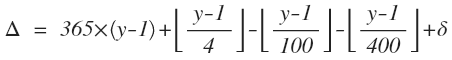

Introduction
In order to make the algorithm for the calculation of the elven date, I first got inspiration from two texts from the Internet which you can read with comments here. I do not completely agree with them, but they served as a very important basis for the whole logic.
Assuming the reader is already familiar with the way these calendars work, by either reading Tolkien material or the texts provided here, I want to further discuss the logic used in this project.
Rules
A few rules are taken from the material available:
- One "normal" loa has 365 days
- One leap loa has 368 days
- The loa is leap every 12 loar
- 144 loar result in 1 yén
- The last loa of every 3rd yén is not a leap loa
Assumptions
A few assumptions also take place:
- The reckoning must start as closest as possible with the Gregorian calendar
- The first day of winter must match the 21st of November of the year 1
- The offset of the last rule must be applied, pushing the first day of the first loa to 29th of March, year 1
- No other adjustements other than the ones expected in the rules above must be made
Method of calculation
The current time will be calculated in the following manner:
- The 1st of January of the year 1 (gregorian day 1) will be calculated using the Gregorian calendar (it is assumed that any innacuracies were dealt with in this reckoning)
- The current date is the sum of all days since gregorian day 1 minus the offset of the first year/loa (day 1)
- All loar will be grouped in clusters of 12, designated "leap cycle" or, for short, "cycle"
- All yéni will be the result of a cluster of 12 cycles
- All yéni will be grouped in clusters of 3 designated "yeni group period", or, for short, "period", in which there will be 3 days removed to follow rule #5
Values
From this point, we can calculate a few constant values to be used in the whole logic:
- loa
- 365
- leap.period
- 3
- leap.loa
- loa + leap.period = 365 + 3 = 368
- normal.cycle
- loa × 11 + leap.loa = 365 × 11 + 368 = 4,383
- no.leap.cycle
- loa × 12 = 365 × 12 = 4,380
- normal.yén
- cycle × 12 = 4,383 × 12 = 13,149
- no.leap.yén
- normal.cycle × 11 + no.leap.cycle = 4,383 × 11 + 4,380 = 13,146
- period
- normal.yén × 2 + no.leap.yén = 13,149 × 2 + 13,146 = 39,444
Absolute date
Before assembling the elven calendar, we must count how many days passed since the beginning of the Gregorian reckoning.
Assuming the Gregorian reckoning fixes the Julian calendar deficiencies and the year 1 of this counting is in effect the first year of the common era, we sum up all days passed since the beginning of the reckoning until the last day of the previous year. Then we calculate how many days passed in the current gregorian year.
To count the days passed in the current year we can use this equation:
![dl = [floor(30.6*(m+9)%12)+58.5+d]%365](./img/gregorianDayOfYear.png)
To count the days passed since year 1, we can use this:
